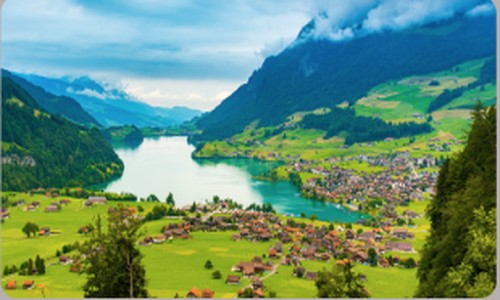

Why Switzerland?

- Stunning Alpine Landscapes
- Rich Cultural Heritage
- Endless Adventure
Top Destinations

Zermatt
Home to the iconic Matterhorn, Zermatt is a car-free village perfect for skiing, hiking, and mountaineering.
Learn More
Lucerne
A charming city, Lake Lucerne is known for its medieval Chapel Bridge and stunning mountain views.
Learn More

Interlaken
Nestled between two lakes, Interlaken is an adventure capital and gateway to the Jungfraujoch region.
Learn More